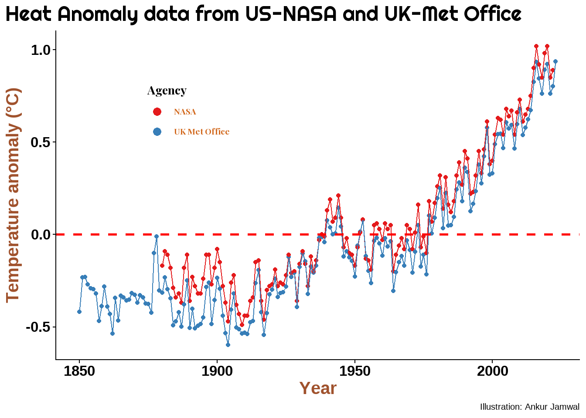
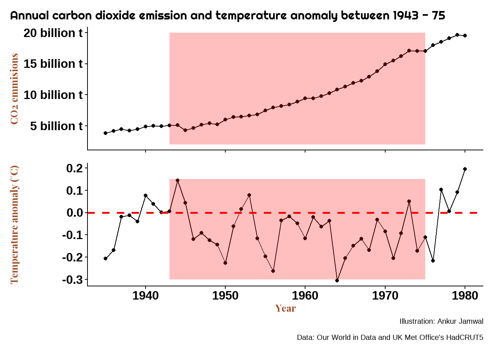

Last update: September 23, 2023
“Dishonesty inspires more euphemisms than copulation or defecation. This helps desensitize us to its implications. In the post-truth era we don’t just have truth and lies but a third category of ambiguous statements that are not exactly the truth but fall just short of a lie. Enhanced truth it might be called. Neo-truth. Soft truth. Faux truth. Truth lite.”
… Ralph Keyes (The Post-Truth Era)
Why are we debating climate change?
People love to debate on social media. I love debates. I love conspiracy theories too. Some of my favourite topics are moon landing is a hoax, Earth is flat, and climate change is not real.
I have no doubts about the spherical nature of Earth, and it would really break my heart if some day they could prove inconclusively that the moon landing of Neil Armstrong et al never happened. Nonetheless, it is fun to watch people get creative while they quibble over earth’s shape and moon landing. But, I do not think that these two topics have much impact on the society or how people live their daily lives. However, climate change is a serious issue, it affects our survival.
If climate change is as big an issue as professed by most scientists, tackling it would require all our efforts and lots of money. In fact, our governments are already funding research and making policies to counter the purported ill effects of climate change.
Conversely, if climate change is a mere hoax then spending billions of dollars (or any currency for that matter) of public funds on it would amount to nothing. Instead, this money could be used for other causes like public health, sanitation and education. For the sake of perspective, the Climate Policy Initiative estimates that USD 632 billion were spent in the fiscal year 2019-20 on various aspects related to climate change mitigation and adaptation. This is in contrast to USD 4.35 trillion annual financing required to meet the global climate objectives (CPI 2021).
Do I believe in climate change?
Let us find out at the end of the blog if I am a believer. Sometimes I do feel conflicted and hope that by the end of the blog I would have found enough empirical evidences to chose a side.
The Climate Change Denial
Actually, almost nobody denies that climate is changing. Also, the so called climate change deniers call themselves skeptics and they accept that the climate on Earth is changing. But they contest the role of humans and accelerating nature of climate change. This could be due to economic interests (fossil fuel companies), political affiliations (especially in the US), or religious beliefs (beyond my understanding).
Most of us have experienced that summers are getting really hot these days. I read that it hasn’t rained in some parts of the world, or excessive rains have devastated some regions. Oh that flood in Libya. Heat has destroyed standing crops. Some waterfalls near my home had dried up but then the rivulets have been wrecking havoc every monsoon due to cloudburts.
Perhaps extra heat that we feel could be because of our poor choices of house construction and concretization of the cities and villages. Drying up of wells and rivers could be just because of deforestation or excess water extraction from the streams and water table to support increasing human population. We may complain of hot summers but we also read that some places are facing snow storms and prolonged cold waves. What are we to judge from these conflicting weather conditions?
What about the extreme weather events like floods, heavy rainfalls, and cyclones? Well, weather has always been unpredictable. We, and our ancestors, have witnessed crazy downpours and floods multiple times. Humans have a habit of fixating over extreme events and find reasons beyond their control to curse. Most of the year the weather seems fine, except for a few days. Extreme weather events were always there. It is just that we read more about them these days from social media and then over think the calamities – sensationalism sells! Perhaps, things were always like this and we just created an excuse to hide the government’s incompetence.
As mentioned in the Keyes’ quote at the start of this blog, we live in an era where the truth is hidden behind the arguments of pseudoscience. A confusion in the minds of the people living on our planet is dangerous as it could deviate their focus from issues that really matter and holding their governments accountable. So, make good use of your time, read on, and decide if you want to spend your future on denying or supporting climate change.
First, arguments from the climate change deniers/skeptics.
The computer models to ascertain climate change are faulty
The climate change projections depend on computer models because of two main reasons;
- We cannot conduct control experiments to evaluate the cumulative effects of environmental elements such as carbon dioxide, clouds, snow, glaciers on global temperature. There are just too many elements that contribute to the warming of earth and each of these elements is dynamic with varying effects. We need computer to do the calculation for us keeping in mind the effects of various variables and their dynamic nature.
- We do not have direct historic instrumental readings of temperature so we have to depend on proxies such as carbon isotopes, ice core elements, and reading tree rings (this is a lot more technical and definitely not similar to reading tea leaves).
Computer models usually work on the principle of garbage in, garbage out. Thus, a computer’s estimate is just as reliable as the input data. Patrick Frank in his paper suggested that the thermometers that provided us with the readings during the reference period had some errors which were handled or processed incorrectly. Consequently, based on his calculations, the temperature anomaly during 1856 – 2004 period was 0.84 ℃ with an error of 0.98 ℃ (95 % confidence). From this, Patrick Frank concluded that we cannot claim that the earth has really warmed and even though there is an upward trend, it could be attributed only to random reasons with no reason for an alarm. Thus, it is obvious that when one enters the data that intrinsically has high variability, then the output would also have similar level of error – giving us poor confidence.
You may refer to Patrick Franks paper to see the graphs and figures. I do not think I can show them here due to copyright issues. But please understand that the inferences in Patrick Frank’s paper are drawn from his own calculations, which may not be a standard in the scientific community.
TipReference period
Reference period
IPCC and NASA compare the current global average temperature against the 1850 – 1900 period (aka the reference period or climate normal). This is the earliest period for which we have the direct measurements of sea and land surface temperature at a global scale. However, the Word Meteorological Organization (WMO) has recommended that the climate normal should be updated every decade. Thus, you may find that the WMO and the US National Oceanic and Atmospheric Administration (NOAA) use 1901 – 2000 as the climate normal or the reference period.
I will stick to the IPCC’s definition for the most part of this blog, unless explicitly mentioned otherwise.
Temperature anomaly would then refer to departure (negative or positive) from the reference period.
Different scientific agencies have their own version of climate change
The entire argument about climate change pivots on one point – the current average temperature of earth is more than what it should be. But, how much should be the Earth’s temperature?
John Tyndall, in 1859-60, showed in his newly invented spectrophotometer that carbon dioxide and water vapour can absorb a lot of heat. Although Eunice Foote, in 1856 had written for The American Journal of Science, that carbon dioxide can absorb heat. But Foote was a woman, so was not allowed to present her work in front of the learned scientific community. Nonetheless, based on Tyndall’s discovery, the Swedish scientist Svante Arrhenius predicted in 1896, for the first time, that carbon dioxide from burning fossil fuels would cause global warming. Arrhenius said that mere doubling of carbon dioxide in atmosphere could lead to 5 - 6 ℃ rise in global temperature. The scientists have ran those calculation again and again, and still swear by Arrhenius’ work to show that Industrial Revolution resulted in a sudden spike in global carbon dioxide which caused global warming and climate change. However, we do not have sufficient data from direct readings to prove it.
To begin with, the Industrial Revolution is considered to have happened between 1760 and 1840, but we have global average temperature measurements from thermometers since 1850 only. The temperatures for the period before 1850 are calculated using computer models and proxies which have large error. This is really unfortunate because the modern mercury thermometer was already invented by Daniel Gabriel Fahrenheit in 1714. We were 136 years late to use thermometers for atmospheric readings at a global scale. Furthermore we have precise records of atmospheric carbon dioxide only since 1958, approximately 108 years after we began measuring surface temperature at the global scale!
TipGlobal surface temperature
Global surface temperature is an average of land and sea surface temperatures.
The land-surface temperatures are recorded as the heat of the air 2 m above the surface of the land. The sea-surface temperature refers to the temperature of the top few millimeters of sea water.
TipFirst carbon dioxide measurements
Charles David Keeling of the Scripps Institution of Oceanography began the first precise measurement of atmospheric carbon dioxide concentration in the year 1958 at the Mauna Loa base in Hawaii.
Not only did humans lack global readings before 1850, the measurements until early 1900 were still not really reliable. As can be imagined, it is difficult to establish permanent weather stations over oceans, especially over the shifting ice in the poles. Thus, some datasets do not account for the sea surface temperatures (eg. HadCRUT), while some use approximations through readings from the nearest weather stations (eg. NASA). Due to varied data collection, the estimate of Earth’s average surface temperature for the reference period (1850 – 1900) is inconsistent between different climate monitoring agencies (see Figure 1 ). Since the baseline data differs from agency to agency, the estimate of global warming also differs. For example, the NASA’s GISTEMP record, which takes into account the Arctic temperature, shows more warming than the UK Met Office’s HadCRUT data. This is because polar regions have experienced more warming and any dataset that includes this warming will show higher average global temperature in comparison to the reference period.
TipOldest temperature record
The oldest direct instrumental measurement of atmospheric temperature exists for Central England temperature (CET), which began measuring atmospheric temperature in 1659.
The computer models exaggerate the warming effects of atmospheric carbon dioxide
Just as different agencies have their own ways of measuring global average temperature, the climate model experiments run by various agencies also differ in their temperature projections. This is why IPCC came up with Coupled Model Intercomparison Project (CMIP). The CMIP allows various models to be analyzed and compared. In the 6th version of CMIP (CMIP6) the IPCC compared around 100 models and found that a lot of these models showed very high sensitivity to carbon dioxide. Which means that these models were showing very high warming (upto 5 °C) when atmospheric carbon dioxide was doubled. Moreover, when these models were used to backtrace Earth’s temperature, they failed miserably. This made IPCC to realise that just averaging the results of all the climate change models is not a good idea as this would over estimate the warming potential of carbon dioxide. Instead, the IPCC has now assigned weightage to each model – the more accurate the model, the higher its weightage. This would eliminate the overestimation bias in the IPCC’s predictions. Just excluding ‘too hot’ models could be done but then each model has some good thing to offer which cannot be neglected and should be used in the overall prediciton models (Hausfather et al. 2022).

Carbon dioxide is not even a greenhouse gas
Some skeptics say that that carbon dioxide is not even a greenhouse gas. Skeptics cite the period between 1943 and 1975, when the global temperature decreased despite an increase in the atmospheric carbon dioxide.
Ignoring unknown labels:
• illustration : "Ankur Jamwal"
As can be seen from the Figure 2, between 1943 and 1975, the carbon dioxide emissions increased by 12.01 billion tonnes. However, the mean temperature anomaly during the same period was -0.09 °C; a fall in global temperature!
The Vostok Ice core
If you are reading this blog then the chances are that you must have heard about the Vostok Ice Cores. For those who do not know what Vostok Ice Cores are, a collapsible call-out tip is here to help.
TipThe Vostok Ice Cores
Vostok sounds a very Russian name. Though it is a Russian name, the place Vostok we are talking about is not in Russia. Vostok refers to a place in Antarctica, 1,301 Km East to the Geographical South Pole. This place has a Russian Antarctica Research station with facilities to drill ice and extract cores. The Vostok station was established in December 1957 and the core drilling began in the year 1970s with French collaboration. Multiple cores reached a depth of 3,623 meters and has proven to be Pandora’s box of environmental conditions stretching 420,000 years
Scientists have studied the elements and gases trapped in the ice cores for ages and used it as proxies to determine Earth’s past. For example, air in ice bubbles was analyzed to determine the atmospheric gaseous concentration. Excess of deuterium (2H) to protium (1H), expressed as 𝛅D, is used to estimate paleo temperatures.
The Vostok ice cores were supposed to put an end to the climate change and global warming debate but it gave a shot in the arm to the skeptics. If CO2 were to be blamed for rising global temperatures, then the pattern of Earth’s temperature (or 𝛅D) should align with the pattern of CO2. Or, temperature should rise and fall after the rise and fall of CO2. However, at the beginning of the last ice age (114000 – 130000 years for present years) the 𝛅D began to fall without any change in CO2 for almost 14000 years! Thereafter, the temperature (measured as 𝛅D) began to rise; however, CO2 continued to fall. This gives a strong indication, almost proves that CO2 has almost no role to play in Earth’s temperature Figure 3.
The period, 114000 – 130000 years is plotted separately with a linear regression line (in red) to demonstrate that there was a continuous decline in global surface temperature against an almost negligible decline in global CO2 (see Figure 4).


Also, upon closer examination of the entire Vostok Ice Core data (Figure 3), you would find that in many cases it is the change in the temperature that leads the change in CO2 trend. This could be interpreted as temperature being a driving force for the global CO2 concentration.
Conclusion
The data, that the climate scientists use to prove climate change and global warming, itself sometimes shows that our Earth is warming up not because of anthropogenic CO2, but due to some other unknown reasons. It could be solar activity, cloud behaviour or just an unknown entity that we are chosing to ignore because of our obsession to shut the fossil fuel industry. Whether we like it or not, the fossil fuel industry is here to stay for some time because we still haven’t found proper alternatives for it. People are against wind energy because it kills birds. People do not want nuclear energy because we fear incidences like Chernobyl and Fukushima. Solar is just not dependable; especially during rainy days. Now is the time for new blog on why scientists think that anthropogenic climate change is real. I hope you enjoyed this blog. If yes then please share it with your friends and drop a comment below. I would love to hear from you. Just be nice though 😊.
References
CPI. 2021. Global Landscape of Climate Finance 2021. https://www.climatepolicyinitiative.org/wp-content/uploads/2021/10/Full-report-Global-Landscape-of-Climate-Finance-2021.pdf.
Hausfather, Zeke, Kate Marvel, Gavin A. Schmidt, John W. Nielsen-Gammon, and Mark Zelinka. 2022. “Climate Simulations: Recognize the ‘Hot Model’ Problem.” Nature 605 (7908): 26–29. https://doi.org/10.1038/d41586-022-01192-2.